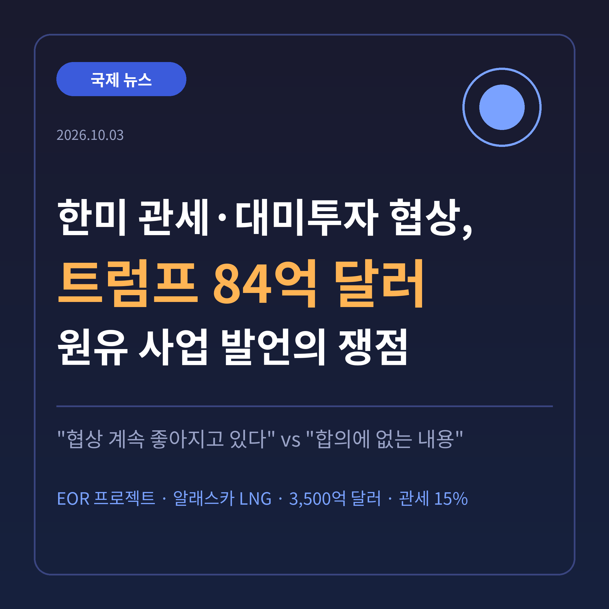
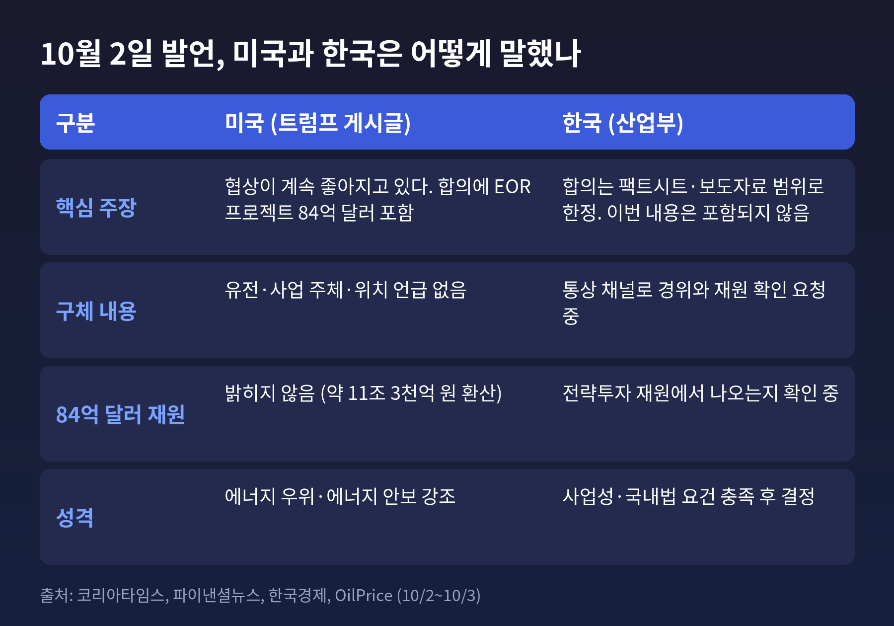
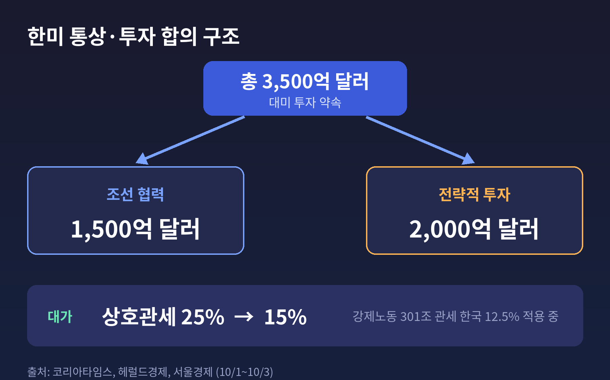
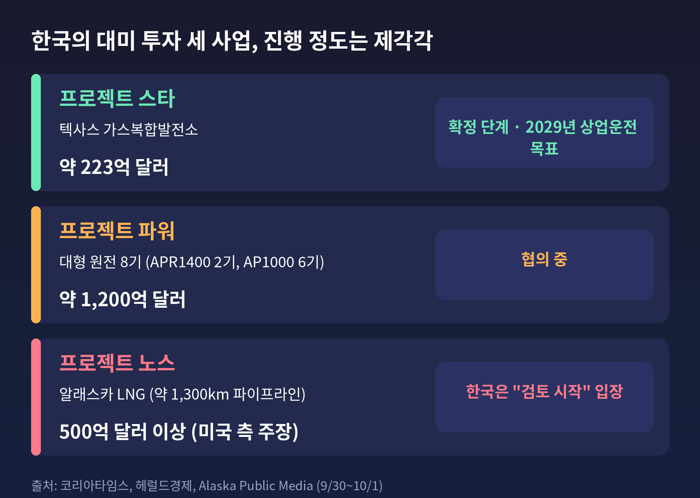
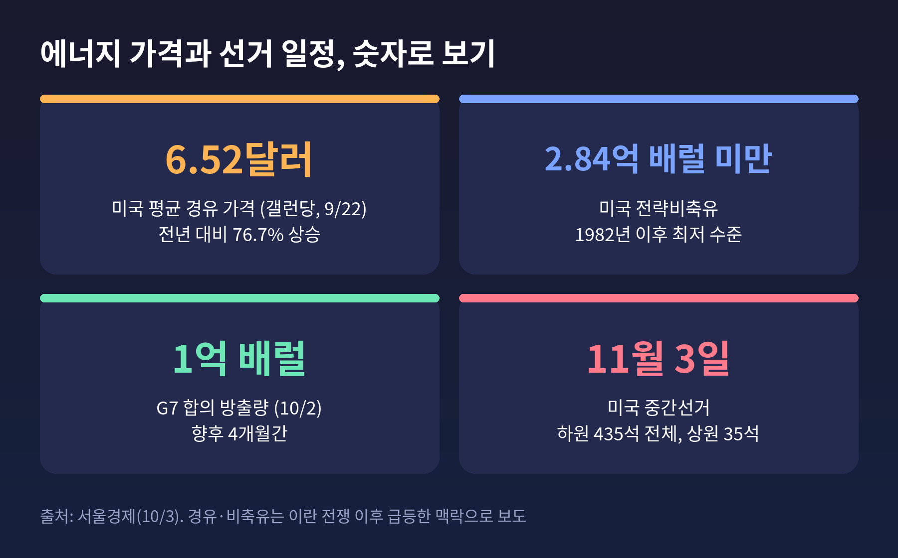
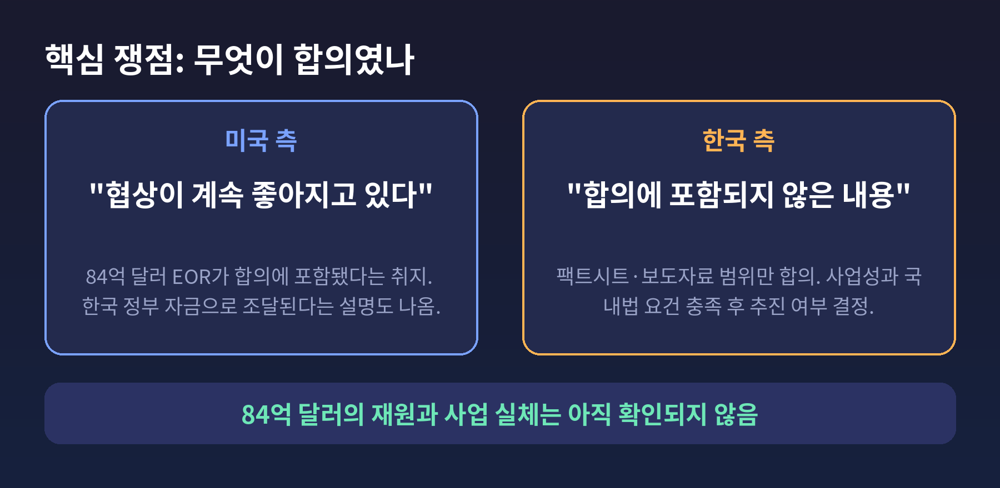

이번 글에서는 트럼프 대통령이 10월 2일 언급한 84억 달러 규모 원유 프로젝트와, 이를 둘러싼 한미 통상·투자 협상의 현재 위치를 정리해 보겠습니다.
3줄 요약
트럼프 대통령은 2026년 10월 2일(현지시간) 자신의 소셜미디어 트루스소셜에 글을 올렸습니다.
한국과의 협상이 계속 좋아지고 있고, 합의에 "84억 달러"의 원유 회수 증진 프로젝트가 들어 있다는 취지였습니다. 코리아타임스가 전한 원문은 "8.4 Billion Dollars for an enhanced Oil Recovery (EOR) Project"입니다. 한국경제는 이 금액을 약 11조 3천억 원으로 환산했습니다.
EOR는 생산량이 줄어든 유전에 이산화탄소 등을 주입해 압력을 높이고, 땅속에 남은 원유를 더 끌어내는 기술입니다. 석유 증산과 에너지 안보를 앞세우는 트럼프 행정부의 기조와 맞닿아 있습니다.
문제는 구체성이었습니다. 어느 유전인지, 어떤 기업이 맡는지, 어디서 하는지가 게시글에 없었습니다. OilPrice와 세계일보도 이 점을 짚었습니다.
한국 정부의 반응은 신중했습니다. 산업부는 양국 합의가 팩트시트와 보도자료에 명시된 내용에 한정된다고 밝혔고, 이번 사안은 합의에 없는 내용이라는 취지로 설명했습니다. 동시에 통상 채널로 경위와 재원을 확인하고 있다고 전해졌습니다. 84억 달러가 한미 전략투자 재원에서 나오는 것인지도 확인 대상입니다.

금액 자체보다 '합의의 범위'가 중요합니다.
한국은 지난해 관세 합의에서 총 3,500억 달러 투자를 약속했습니다. 조선 협력 1,500억 달러, 전략적 투자 2,000억 달러로 나뉩니다. 그 대가로 상호관세는 25%에서 15%로 낮아졌습니다.
이 구조에서 어떤 사업이 '합의된 투자'로 인정되느냐는 곧 한국 기업과 재정이 얼마나 부담을 지느냐의 문제입니다. 미국이 발표하는 사업이 늘어날수록 한국의 선택 폭은 좁아집니다.
관세도 아직 안심하기는 이릅니다. 강제노동 관련 무역법 301조 관세가 7월 24일부터 적용돼 한국에는 12.5%가 매겨지고 있습니다. 미국은 공급과잉 관련 301조 조사 결과도 발표할 예정입니다. 김정관 산업부 장관은 미국이 어떤 형태로든 관세율을 15% 수준에서 유지하겠다는 입장을 밝혔다고 전했습니다. 다만 합의문에 관세 수준이 직접 적히지 않은 점은 아쉽다고 했습니다.

이번 일은 처음이 아닙니다.
9월 30일 트럼프 대통령은 백악관에서 한국의 대미 투자 세 건을 한꺼번에 발표했습니다. 알래스카 LNG 500억 달러 이상, 대형 원전 8기 약 1,200억 달러, 텍사스 가스복합발전소 약 220억 달러였습니다. 러트닉 상무장관은 이 사업들이 한국 정부 자금으로 전액 조달된다는 취지로 말했습니다.
한국 측 설명은 달랐습니다. 이재명 대통령과 김정관 장관은 알래스카 LNG에 대해 "상업적 합리성과 국내법상 요건을 충족한다는 조건 아래 검토를 시작하기로 했을 뿐"이라고 선을 그었습니다. 발표가 합의를 앞질렀다는 것입니다.
서울경제는 트럼프 대통령이 "동의하지 않으면 두 배로 청구하겠다"는 취지로 말했다고 보도했습니다.
세 사업의 진행 정도도 서로 다릅니다.
알래스카 LNG에는 현실적 우려도 따릅니다. 중앙데일리 사설은 극한의 북극 환경에서 공사를 해야 하는 부담, 투자 수익의 불확실성, 엑슨모빌 같은 대형사가 빠진 점을 지적했습니다.

시점을 보면 국내 정치의 그림자가 보입니다.
11월 3일 미국 중간선거까지 한 달 남짓 남았습니다. 하원 435석 전체와 상원 35석이 걸려 있습니다. 세계일보가 인용한 조사에서 트럼프 대통령의 국정수행 지지율은 32%(9월 로이터·입소스), 경제 운영 지지도는 26%, 생활비 대응 지지도는 17%(AP-NORC)에 그쳤습니다. AP통신은 대규모 투자 발표가 경합 지역 공화당 후보를 돕는 데 쓰이고 있다고 분석했습니다. 실제로 알래스카 발표는 재선에 나선 댄 설리번 상원의원에게 힘을 보태는 효과가 있다는 해석이 나왔습니다.
에너지 가격도 부담입니다. 서울경제에 따르면 미국 평균 경유 가격은 9월 22일 기준 갤런당 6.52달러로 1년 전보다 76.7% 올랐습니다. 전략비축유는 2억 8,400만 배럴 아래로, 1982년 이후 가장 낮은 수준입니다. G7은 10월 2일 4개월간 1억 배럴 방출에 합의했습니다.
석유 증산과 LNG를 앞세운 투자 발표는 이 같은 압박에 대한 정치적 답변으로 읽힙니다. 물론 이것은 해석의 영역입니다. 미국 측은 이를 에너지 안보와 동맹 협력의 성과로 설명합니다.

한 번 정리해 보겠습니다.
미국 측은 협상이 순조롭고, 한국이 에너지 분야에 대규모 투자를 하기로 했다는 입장입니다. 자금은 한국 정부가 댄다고도 말합니다.
한국 측은 합의 문서에 명시된 범위 안에서만 움직이겠다는 입장입니다. 사업성과 국내법 요건을 갖춘 뒤 추진 여부를 정한다는 원칙도 반복하고 있습니다. 정부 내에서는 "대미투자는 불가피한 선택"이라는 평가와 함께, 관세 상한을 문서로 확실히 해야 한다는 아쉬움도 나옵니다.
확인되지 않은 부분도 분명히 있습니다. 84억 달러의 재원, 사업 실체, 전략투자 2,000억 달러와의 관계는 아직 공개된 근거가 없습니다. 2,000억 달러 안에 포함되는지도 확인되지 않았습니다. 확정적으로 말하기 어려운 이유입니다.

앞으로 살필 대목은 세 가지입니다.
첫째, 산업부의 확인 결과입니다. 84억 달러가 어떤 경로로 나왔는지, 별도 사업인지가 드러날 것입니다.
둘째, 301조 공급과잉 조사 결과입니다. 한국에 어느 수준의 관세가 붙는지에 따라 15% 상한이 지켜지는지 판가름납니다.
셋째, 11월 3일 중간선거 이후의 태도입니다. 선거용 발표라면 선거가 끝난 뒤 속도와 어조가 달라질 수 있습니다. 반대로 에너지 투자는 선거와 무관하게 압박이 이어질 수도 있습니다. 어느 쪽인지는 아직 알 수 없습니다.
한국으로서는 합의 문서의 문구를 기준으로 삼되, 투자 사업별 수익성을 따져 협상력을 지키는 일이 과제입니다.
정리하면 이렇습니다.
이번 논란의 핵심은 금액이 아니라, 무엇이 합의였는가라는 물음입니다.
한쪽은 합의했다고 말하고, 다른 쪽은 아직 검토 중이라고 말합니다. 그 간극을 문서로 메우는 일이 앞으로 몇 주의 숙제일 것입니다.
참고한 보도: 세계일보(10/2, 10/3), 코리아타임스(10/1, 10/3), 파이낸셜뉴스(10/3), 한국경제(10/2), OilPrice(10/2), 서울경제(10/3), 헤럴드경제(10/1), 중앙데일리(10/2), Alaska Public Media(9/30)